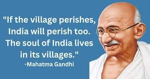
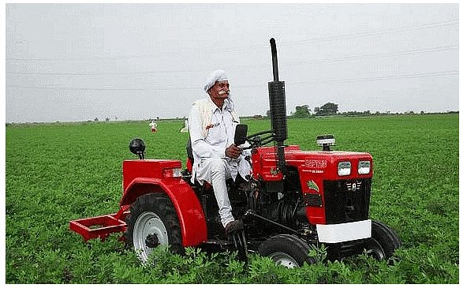
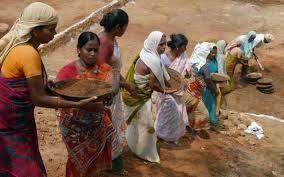
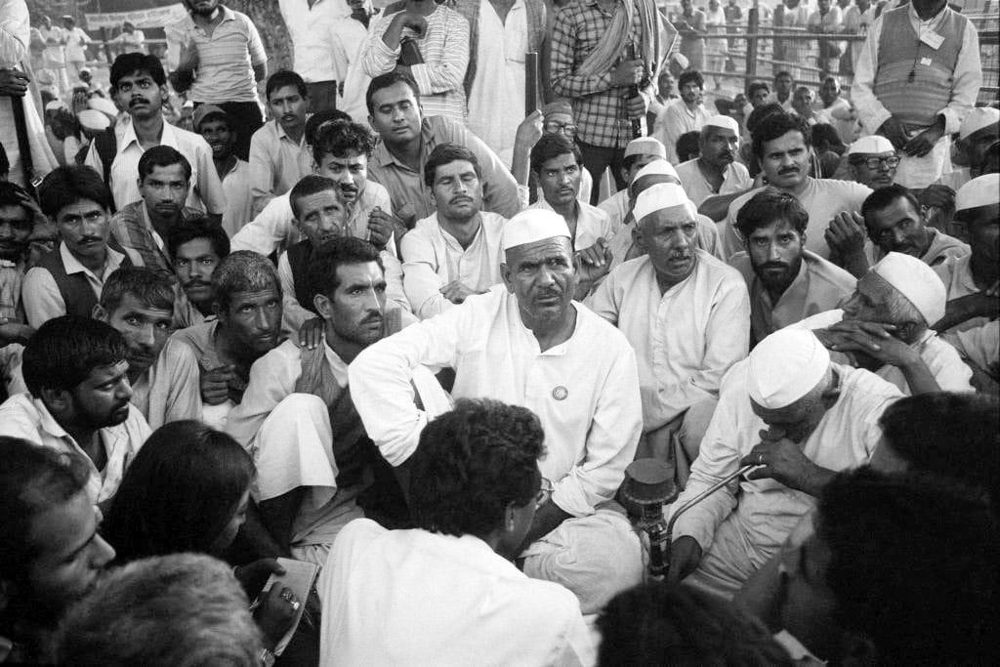
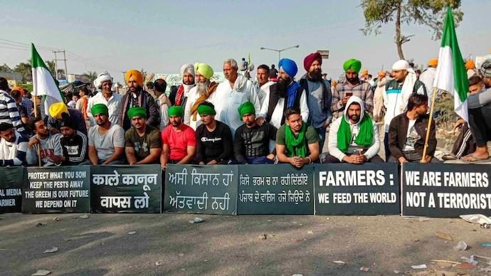

Rural Society and Agrarian Social StructureHigh priority
Use the thinker plus village pair for studies, and land, class and technology for structure; add a movement or programme example for transformation.
Chapter map#
- Rural society
Village idea
- Metcalfe
- Ambedkar
- Srinivas, Dube, Beteille
Village studies
- Coorg, Rampura
- Sripuram, Bisipara
- Criticism
Land
- Tenure
- Land reforms
- Bhoodan
Green Revolution
- HYV, inputs
- Inequality
- New elite
Classes
- Beteille
- Landholding
- Globalisation
Transformation
- Cooperatives
- MGNREGA, MSP
- Labour, migration
- Factions
- Farmers' movements
Exam lens#
The story first#
In simple words#
- Village views: little republic (Metcalfe) versus sink of localism (Ambedkar); field studies show villages are dynamic and connected.
- Land reforms abolished intermediaries, regulated tenancy, set ceilings and redistributed land; Green Revolution raised output but widened inequality.
- Rural change also runs through cooperatives, MGNREGA, MSP, labour and migration, factions and farmers' movements.
| Term | In plain words |
|---|---|
| Little republic | Metcalfe's image of the village as self-sufficient and unchanging. |
| Land ceiling | Law capping land holdings to redistribute surplus. |
| Bhoodan | Vinoba Bhave's voluntary land donation movement. |
| HYV seeds | High-yielding variety seeds, the core of the Green Revolution. |
| Feudal mode of production | Land is the main input; subsistence and nature-dependent. |
| Capitalist mode of production | Capital, market inputs and wage labour drive production. |
| Faction | Lewis: primarily a kinship unit of one or more extended families. |
| Bargadar | Sharecropper in the Tebhaga movement. |
| MGNREGA | Rights-based guarantee of 100 days of wage employment. |
1 · Rural Society#
- Rural society in India constitutes the foundational base of its social structure, with a significant proportion of the population historically residing in villages.
- It is characterised by agrarian economy, close-knit social relations, caste-based hierarchies, and strong community networks.
- The study of rural society is crucial for understanding broader Indian social processes, as villages have long been seen as sites where tradition, inequality, change, and development intersect.
- Over time, rural India has undergone significant transformation due to colonial interventions, land reforms, technological change, and state-led development programmes, yet it continues to reflect enduring structural features alongside emerging dynamics.
2 · The Idea of the Indian Village#


- The idea of the Indian village has occupied a central place in sociological and administrative thought, as villages have often been seen as the core of Indian civilisation.
- It is commonly argued that “India lives in its villages,” and therefore, to understand Indian society, one must understand village life.
- However, different scholars and leaders have offered contrasting interpretations of what the Indian village represents.
3 · Administrative and Socio-Political Ideas#
- One influential view, associated with Britush administrator Charles Metcalfe, described villages as “little republics”, largely self-sufficient and autonomous units that continued unchanged despite political upheavals.
- This perspective emphasised stability and continuity, portraying villages as resilient and self-contained entities.
- A similar but more normative vision was articulated by Mahatma Gandhi, who idealised the village as a self-sufficient, harmonious, and morally grounded community.
- His idea of Gram Swaraj imagined villages as independent republics based on cooperation, interdependence, and decentralised governance.
- This view emphasized harmonious and ethical community life.
- In sharp contrast, B. R. Ambedkar offered a critical perspective, describing the village as a “sink of localism, a den of ignorance, narrow-mindedness and communalism.” For Ambedkar, villages were not harmonious but deeply hierarchical and oppressive, particularly for lower castes, marked by exclusion and inequality.
- Jawaharlal Nehru, viewed villages as backward and in need of modernisation.
- Nehru emphasised the role of planning, industrialisation, and scientific development in transforming rural India and overcoming stagnation.
4 · Sociological Idea of the Indian Village#
- Sociologists such as M. N. Srinivas, S. C.
- Dube, and Andre Beteille provided a more empirical understanding of rural India.
- They argued that villages are neither isolated nor static but are dynamic and interconnected with wider social, economic, and political processes.
- Ties of kinship, markets, pilgrimage networks, and administrative exigency interconnected the village with other villages and the wider region.
- The Indian village represents a microcosm of Indian society, because it reflects, in a condensed form, the key structural and cultural features of the wider civilisation.
- The village embodies the caste system, which organises social hierarchy, occupational roles, and patterns of interaction.
- The coexistence of multiple castes, linked historically through systems like jajmani, mirrors the broader social stratification of Indian society.
- Similarly, kinship and family structures - such as patrilineality, joint families, and norms governing marriage - are prominently visible in villages, reflecting enduring civilizational patterns.
- The villages also reflect India’s civilizational ethos, particularly values such as hierarchy, interdependence, and community orientation.
- Rituals, festivals, religious practices, and belief systems are deeply embedded in everyday village life, demonstrating the continuity of cultural traditions.
- The idea of collectivism, where social life is organised around collective norms rather than individual autonomy, is strongly evident in village settings.
- At the same time, values of purity and pollution, community honour, and social obligation continue to shape behaviour and social relations.
- Importantly,villages are not closed systems but are connected to markets, state institutions, migration networks, and media.
- This linkage ensures that changes occurring at the macro level - such as economic development, political mobilisation, and social reform - are reflected within village life.
- Thus, the village captures both continuity and change, tradition and transformation.
- In this sense, the Indian village serves as a microcosm because it simultaneously reflects the structural features, cultural values, and dynamic processes of Indian society, making it a useful site for understanding the broader civilizational patterns of India.
- Thus, the idea of the Indian village is not singular but plural.
- It has been viewed variously as self-sufficient, harmonious, oppressive, backward, or representative of Indian civilisation.
- A sociological understanding reconciles these perspectives by recognising that villages embody both continuity and change, tradition and inequality, as well as integration with the larger social system.
5 · Village Studies in India#

- Village studies occupy a central place in Indian sociology, as villages were long considered the core units of Indian society.
- The systematic study of villages began during the colonial period, but gained increased prominence in the mid-20th century, particularly after Independence, when sociologists and anthropologists sought to understand rural social structure, caste relations, and processes of change.
6 · Golden period of village studies#
- Village studies flourished in India in the 1950s and 1960s, often described as the “golden period” of Indian sociology.
- This was due to a combination of academic, administrative, and policy-related factors:
- 1. After independence, the Indian state took up many welfare functions.
- Village studies helped to understand the rural social structure.
- Village studies provided crucial inputs for the centralised planning process.
- 2. Village studies helped to assess the impact of policies and legislation on the lives of the people.
- 3. Academic developments in the West influenced this trend.
- Scholars like Robert Redfield popularised the study of peasant society.
- 4. The dominance of the structural-functional approach in the 1950s encouraged detailed field-based village studies.
- Thus, village studies were not merely academic exercises but closely linked to nation-building and development planning.
7 · Challenges during Village Studies#
- The social anthropologists had to overcome several challenges that they encountered while conducting village studies, such as:
- 1. Difficulty in gaining entry into village society and building trust.
- 2. Long duration of stay, lack of amenities, language barriers, and non-responsiveness.
- 3. Limited access to female respondents in a patriarchal setup. 4.
- Upper-caste bias, as many researchers relied on upper-caste informants.
- 5. Funding constraints.
- 6. Need for detailed field notes; M. N. Srinivas lost his notes and reconstructed The Remembered Village from memory.
- 7. Dominance of structural-functional approach, leading to emphasis on harmony over conflict.
- 8. Problem of objectivity; studying one’s own society may involve preconceptions (as noted by Srinivas). M.N. Srinivas and other social anthropologists of the time acknowledged and addressed these challenges to develop detailed ethnographic accounts of the rural people in several villages in different parts of the country.
8 · Some Important Contributions to Village Studies in India#
- Village studies in India have been a cornerstone of sociological and anthropological research, providing detailed insights into the social, economic, and cultural fabric of rural life.
- These studies emerged as scholars sought to understand the complexities of Indian villages beyond generalized assumptions.
- By conducting in-depth fieldwork, mainly through participant observation, and long-term immersion, researchers were able to capture the dynamics of social hierarchy, power relations, and community change.
- Pioneering studies by scholars such as M.N. Srinivas, S.C. Dube, Andre Beteille, F.G.
- Bailey, and Leela Dube not only documented village life in specific regions but also introduced key theoretical concepts, significantly shaping our understanding of rural India.
9 · Study of Coorg (in Karnataka) by M. N. Srinivas#
- M. N. Srinivas’s pioneering ethnographic work ‘Religion and Society Among the Coorgs of South India’ (1952) is one of the earliest and most influential village studies in Indian sociology.
- The study is based on intensive fieldwork conducted among the Coorgs (Kodavas), a distinctive community inhabiting the small mountainous district of Coorg in present-day Karnataka.
- Geographically, Coorg is a small, isolated province located in the Western Ghats of South India.
- To its north and east lie the Kannada-speaking districts of Mysore (now Karnataka), and to its south and west the Tamil-speaking districts of Tamil Nadu.
- The language of the Coorgs is Kodagi, an independent language, but it is closely related to Kannada.
- The region’s inaccessibility-marked by steep hills, dense forests, and heavy rainfall - contributed to its long-standing isolation, which in turn helped preserve its distinct cultural practices and social organization.
- The Kaveri river, which originates in Coorg, holds deep religious and ritual significance in Coorg society.
- For much of its history, Coorg existed in relative isolation until the 9th century A.D., when they came under the rule of the Changalva and Kongalva dynasties.
- The British annexation of Coorg in 1834 marked a turning point.
- British rule brought sweeping changes such as the abolition of slavery, introduction of coffee plantations, and the expansion of colonial administration.
- These transformations transformed Coorg’s agrarian economy and altered traditional land relations.
- Traditionally, rice cultivation formed the backbone of Coorg’s agrarian economy.
- With the advent of colonial rule, coffee plantations emerged as a major economic activity, second only to rice.
- Upper caste men supervised cultivation and agricultural operations, while much of the manual labour was performed by lower-caste workers.
- Employment in the army was also highly esteemed among Coorg men, reflecting their martial ethos.
- Over time, a combination of agriculture, plantation work, and military service came to define the Coorg economy.
- Coorg men in community dance Commenting on the local social structure, Srinivas identified more than forty castes and tribes in Coorg, including the Coorgs (dominant landowners), Brahmins (priests), Kaniyas (astrologers), blacksmiths, carpenters, washermen, barbers, and Poleyas (farm servants).
- The Coorgs were economically and politically powerful, often resembling Kshatriyas in their cultural ethos, but Coorgs did not perform Vedic rituals.
- They abstained from beef but consumed pork and alcohol - behaviours that reflected a unique blend of ritual orthodoxy and local custom.
- They were known for their skills in hunting, warfare, and competitive games, symbolizing their martial and masculine ideals.
- The family structure of the Coorgs has received detailed attention by Srinivas.
- The Okka was the basic social and kinship unit in Coorg society.
- It was a patrilineal, patrilocal joint family, consisting of several generations of males descended from a common ancestor.
- Only male members had rights to the ancestral estate, while women, after marriage, ceased to be members of their natal Okka and joined that of their husbands.
- The ancestral house was both a residence and a ritual centre, symbolizing lineage continuity.
- Relations between the sexes were marked by segregation and rigid gender roles.
- Men occupied the public spheres, while women’s spaces were domestic and secluded.
- The verandah was the domain of men where they entertained guests.
- Women entertained female guests in the kitchen or the inner rooms.
- Festivals such as harvest celebrations and village deity rituals reinforced this division: men performed songs and dances with gaiety, while women watched from a distance.
- Fertility was celebrated, and women with many children were accorded social honour.
- The Coorgs observed elaborate notions of ritual purity and pollution.
- Menstruation, childbirth, and death were considered impure states.
- A menstruating woman stayed in an outhouse for three days, symbolizing seclusion.
- Contact with the dead or bodily excretions necessitated ritual purification through bathing and changing clothes.
- Different castes were governed by graded restrictions: Brahmin priests could enter all areas of the house, while low-caste Poleyas were not allowed beyond the outer verandah.
- The deity was regarded as especially sensitive to impurity-women during menstruation were prohibited from approaching the deity’s platform.
- Srinivas’s Coorg study marked a high point in village studies, offering a holistic understanding of how caste status, economy, kinship, and hierarchy are interwoven in rural social life.
- The Coorg study is particularly significant for introducing Srinivas’s concept of Sanskritisation - the process by which lower castes or tribes adopt the customs, rituals, and lifestyle of upper castes to claim a higher social status.
- Sanskritisation provided a framework to explain cultural mobility and social change within the caste system - a key contribution that reshaped Indian sociology.
10 · Study of Rampura village (in Karnataka) by M. N. Srinivas#
- M. N. Srinivas’The Remembered Village(1978) is among the most celebrated works in Indian sociology, providing a comprehensive ethnographic account of Rampura, a village near Mysore, Karnataka.
- The study stands out not only for its rich sociological insights but also for the remarkable circumstances under which it was written.
- Srinivas’s original field notes-based on 11 months of fieldwork conducted in 1948-were destroyed in a fire.
- He later reconstructed the entire study from memory, aided by fragments of burnt notes.
- This reconstruction is a testament to his meticulous observation and intimate understanding of Indian rural society.
- Srinivas’s fieldwork in Rampura represented one of the earliest applications of the participant observation method in Indian sociology.
- He lived in the village, interacted closely with its inhabitants, and collected detailed genealogical data, caste records, and economic information.
- Rampura was situated barely 6 kilometres from Srinivas’s ancestral home, which helped him gain access and familiarity but also shaped how villagers perceived him-as an urban, educated Brahmin.
- Although Srinivas attempted to interact with members of all castes,his Brahmin identity and education led to his greater acceptance among the higher castes, particularly the Brahmins, while the lower castes remained somewhat distant.
- Nevertheless, his close observation of everyday life and social relations allowed him to reconstruct the economic, political, and ritual life of the village in remarkable detail.
- Rampura’s economy was primarily agrarian, and peasants constituted the largest section of the population.
- The village headman himself was a peasant, symbolizing their central position in both the economy and polity.
- Although peasants belonged to the Shudra varna, they held considerable power and respect, even among the Brahmins and Lingayats, who remained dominant only in the ritual domain.
- In matters of dispute resolution and local administration, the peasants were decisive.
- This observation led Srinivas to articulate one of his most influential concepts - the “dominant caste”.
- He defined it as a caste that wields pre-eminence in local social and political life owing to a combination of numerical strength, economic power (especially land-ownership), and political influence.
- In Rampura, the Okkaliga caste exemplified this idea-they were numerically strong, controlled agricultural production, and exercised significant authority over village affairs.
- In Rampura, caste hierarchy structured everyday interactions, ritual life, and occupational roles.
- However, power did not flow strictly along ritual lines.
- The Brahmins retained ritual superiority but depended heavily on the Okkaliga peasants for material and political support.
- This inversion of ritual and secular hierarchies fascinated Srinivas and became central to his theorization of rural India.
- The Okkaligas mediated disputes even between Brahmins and untouchables, reflecting their position as the pivot of village authority.
- This dynamic blurred the simplistic notion of Brahminical dominance and highlighted how economic control and numerical strength could override ritual hierarchy in determining real power.
- Srinivas observed that World War II had brought unprecedented economic opportunities to Rampura.
- War-time shortages and rationing led to black-marketeering, from which the dominant landowning Okkaligas profited substantially.
- The sudden influx of cash transformed the village economy: Electrification projects were undertaken; new rice mills were established; and bus services connected Rampura more closely to Mysore city.
- These developments marked the beginning of rural modernization and changing relations between the village and the wider market economy.
- Traditional hierarchies persisted, but they now coexisted with growing commercialization and mobility.
- Through The Remembered Village, M. N. Srinivas provided a detailed and vivid portrayal of Indian rural life.
- His Rampura study combined meticulous ethnography, theoretical innovation, and personal reflection.
11 · Andre Beteille’s study of Sripuram village (Tamil Nadu)#
- In his seminal work, Caste, Class and Power: Changing Patterns of Stratification in a Tanjore Village (1965), Andre Beteille presents a detailed and analytical study of the village of Sripuram in Tanjore district of Tamil Nadu, highlighting the complex interplay between caste, class, and power.
- He develops a tripartite model of stratification, identifying three primary levels of social hierarchy in the village.
- At the top were the Brahmins, who enjoyed ritual dominance as the purest caste group, controlled economic resources as the main landlords, and enjoyed social power and control as well.
- Below them were the non-Brahmins peasants, who were economically active but held less social and ritual power.
- At the bottom of the hierarchy were the Adi-Dravidas, landless sharecroppers, who were economically and socially the most powerless.
- The village was physically segregated along these lines.
- The Brahmins resided in the Agraharam, the nucleus of their social and ritual life, which was largely inaccessible to other castes except on specific occasions.
- The Cheri was a segregated area where most Pallans, the largest Adi-Dravida group, lived.
- The Christian Adi-Dravidas (or Peraiyans), occupied separate huts.
- This separation was reinforced through endogamy, physical barriers, and social norms; the Brahmins avoided entering the Cheri, which was considered ritually polluting.
- The non-Brahmin peasants resided in the Kudiana, representing the intermediate social position in the village hierarchy.
- Importantly, Beteille emphasizes that these broad categories were themselves internally segmented.
- Among the Brahmins, for example, there were divisions based on wealth, occupation, education, and ritual affiliation, such as Srivaishnavs and Samarthas, illustrating the layered and complex nature of social stratification.
- Beteille also documents the transformations that Sripuram underwent over the decades due to factors such as modern education, urbanization, the anti-Brahmin movement in Tamil Nadu, and the rise of democratic politics.
- These changes eroded the traditional alignment of caste, class, and power.
- Many Brahmins migrated to urban areas for education and employment, selling their lands to non-Brahmin peasants, who grew increasingly assertive economically and politically.
- With these shifts, tensions characterized social life in the village, giving rise to triangular bitterness.
- Brahmins resented the non-Brahmins, feeling that land reforms and political changes had undermined their historical patronage and privileges.
- Non-Brahmins, in turn, were frustrated that while they labored intensively in agriculture, Brahmins continued to claim a substantial share of the produce without equivalent effort.
- Meanwhile, the Adi-Dravidas were aggrieved by both groups, as they struggled to secure leases or employment, leaving them idle for significant portions of the year.
- Beteille’s study demonstrates how the dynamics of caste, class, and power in Sripuram were deeply intertwined yet evolving under the pressures of social and political change.
- S.C. Dube’s studies of Shamirpet village (Telangana) and Rankhandi village (U.P.): In his workIndian Village(1955), S.C. Dube presented a comprehensive ethnographic account of Shamirpet, a multi-caste village near Hyderabad in Telangana.
- The study is considered one of the earliest and finest examples of the structural-functional approach in Indian sociology.
- Dube’s aim was to understand the village as a microcosm of Indian society and to examine how various institutions-social, economic, and political - interacted to sustain the larger system.
- He depicted Shamirpet as a community marked by both diversity and integration.
- Though the village had numerous castes, its social life was characterized by functional interdependence among them.
- Agriculture was the mainstay of the economy, and each caste played complementary occupational roles within the agrarian structure.
- Dube emphasized that caste ranking in Shamirpet was based not so much on wealth or economic control as on ritual status and religious purity.
- The ritual and religious life of the village was rich and elaborate; festivals, folklore, and beliefs in the supernatural served to reinforce community ties.
- The Hindus and Muslims of the village shared cordial relations, participating in each other’s festivals, which reflected a degree of communal harmony.
- The family formed the basic social unit of organization, and kinship ties played an important role in regulating social conduct and ensuring stability.
- In this sense, Dube’s portrait of Shamirpet represents an integrated and functionally cohesive social system where traditional institutions maintained equilibrium amidst social and cultural diversity.
- In his work India’s Changing Villages: Human Factors in Community Development (1958), Dube turned his attention from static analysis of village structure to the processes of planned social change under the Community Development Programme (CDP) launched in 1952.
- Based on his fieldwork in Rankhandi village in Saharanpur in Uttar Pradesh, Dube emphasized the critical role of human factors in shaping the outcomes of community and rural development programmes.
- Dube argued that the success or failure of such initiatives depends not merely on the technical or administrative design of the programmes, but significantly on the responsiveness, adaptability, and attitudes of the beneficiaries.
- He highlighted that the degree to which villagers are willing to accept and participate in change - shaped by their prior experiences, social norms, and expectations - directly influences programme effectiveness.
- Similarly, the responsiveness, sensitivity, and commitment of the administrators in understanding local conditions, communicating effectively, and facilitating participation are equally crucial.
- Dube examined how development initiatives interacted with traditional social structures and values.
- Dube highlighted that the success of community development efforts depended not merely on financial resources or administrative planning, but on human and social factors such as attitudes, motivation, participation, and leadership. He argued that the personality and initiative of local leaders were decisive in shaping the outcomes of development programmes.
- Dube was critical of the excessive red-tapism, bureaucratic rigidity, and lack of sensitivity to local realities that hampered these programmes.
- Dube’s analysis also explored how the forces of modernization-education, democracy, and new forms of political participation-were transforming traditional relationships, often producing both cooperation and conflict.
- He observed that change in Indian villages was neither linear nor revolutionary.
- Instead, it was gradual, negotiated, and uneven, shaped by the coexistence of tradition and modernity.
12 · F.G. Bailey’s study of Bisipara village (Odisha)#
- F. G. Bailey’s celebrated ethnographic work on Bisipara, a village in the highlands of Orissa, stands out for its analytical richness and focus on power, politics, and social change.
- Conducted in the early 1950s, his fieldwork culminated in two major works -Caste and the Economic Frontier(1957) and Politics and Social Change: Orissa in 1959(1963).
- Bailey sought to understand how traditional hierarchies, local power structures, and caste dynamics were being reshaped by the forces of democracy, the modern state, and a changing economy.
- Bisipara, as Bailey describes, was a complex village where old structures of ritual authority coexisted with emerging political rivalries and aspirations.
- The community was composed of multiple caste groups, with the warrior caste traditionally dominant.
- Bailey identified three major types of conflict that revealed the underlying transformations of village life.
- First,political factionalism was central to Bisipara’s social life.
- These factions, known locally as dolas, were not based strictly on caste but on networks of loyalty, kinship, and patronage.
- Each dola was led by powerful men from the warrior caste who mobilized followers through economic assistance, political influence, and social alliances.
- These competing groups struggled for control over village resources, prestige, and the mediation of disputes.
- Bailey used this to demonstrate how traditional leadership adapted to the democratic process, revealing that village politics was not simply a reflection of caste hierarchy but a dynamic field of strategic alliances.
- Second, Bailey observed caste climbing, a process in which members of some of the lower castes used newfound wealth and economic enterprise to seek higher social status.
- They attempted to emulate the customs and lifestyles of upper castes through prestige expenditures like sponsoring religious feasts and making temple donations.
- Third, Bailey documented caste-based conflict and resistance in the wake of social reform.
- Following the enactment of the Temple Entry Act, the ex-untouchable caste attempted to assert their right to enter the village Shiva temple.
- The upper castes resisted this act of defiance, and despite legal reforms, the ex-untouchables were barred from entry.
- Bailey used this episode to illustrate persistence of ritual inequality and a gap between legal rights and social realities in India.
- Through his study of Bisipara, Bailey highlighted how power was negotiated, not fixed.
- His analysis transcended static caste descriptions and demonstrated the interplay between economic change, political competition, and social hierarchy.
- He showed that Indian villages were not harmonious communities but arenas of conflict, contestation, and change.
13 · Leela Dube’s field studies#
- “Women’s Worlds-Three Encounters,” originally published in 1970, contains Leela Dube’s experiences of researching in three different sites; her doctoral fieldwork, which was conducted among the Gond women in the late 1940s; her fieldwork in Rankhandi village in western U.P. in the 1950s; and her work focusing on Muslim women in the Lakshadweep islands in the 1970s.
14 · Leela Dube has highlighted the gender dimension in her studies#
- During her fieldwork in Chhattisgarh, she noted how non-Gond observers had characterised the Gond women as immodest and provocative due to their attire (because they did not wear a blouse and covered their breasts using one end of the sari itself).
- Within their community, however, the women enjoyed greater freedom, particularly in terms of movement.
- Even elopement and remarriage were commonplace in the group. However, there were certain strict prohibitions that only applied to women.
- Dube also noticed that the women had little awareness of important religious rituals and local political activities.
- During her tenure as a research assistant in Rankhandi village in Saharanpur (U.P.), Leela Dube’s responsibilities were limited in scope.
- It differed from her fieldwork with Gond women.
- Rankhandi is a huge multi-caste village in western U.P.
- As a Brahmin wife who was also expecting a child,she was required to adhere to the village’s stringent rules and limitations.
- Dube noted that the women of the community lived in a separate world and historically held a low social rank.
- In the 1970s, Dube travelled to the Lakshadweep settlement of Kalpeni.
- Throughout her fieldwork, Dube focused on analysing the interaction between matriliny and Islamic law.
- Prior to entering the area, she had supervised A.R. Kutty’s Ph.D. dissertation on Kalpeni.
- The work offered her such a clear picture of the area that she felt as though she already knew the village before visiting.
- While doing fieldwork in the community, Dube took conscious measures to minimise religious divides.
- She did not engage in Hindu prayer or fasting.
- She did not apply sindoor. She noted that the Muslims in the village put a high emphasis on the matrilineal structure, and also had immense respect for sharia law.
- All matrilineal property transfers necessitated the women’s signatures.
- Compared to Gond and Rankhandi, Dube’s experience working on the island of Kalpeni was far more gratifying and free of restrictions.
- Across these three studies, Leela Dube highlighted how social norms, gendered expectations, and legal frameworks shape women’s lives differently in varying cultural contexts.
- Her work remains foundational in understanding the diversity of women’s experiences in India and demonstrates the importance of situating women within the interplay of caste, kinship, religion, and local practices.
15 · Differences in Approaches#
- Srinivas emphasised processes and change (e.g., mobility, dominance).
- S.C. Dube focused on holistic and integrative analysis of village life, particularly the role of the market, urbanization, and state programs on the rural social life.
- Beteille highlighted conflict, inequality, and social change due to modernizing forces.
- Bailey sought to explore the village from a political lens.
- Leela Dube focused on analyzing the gender dimension in rural social organization.
16 · Significance of Village Studies in Indian Sociology#
- Scholars like M. N. Srinivas and S. C. Dube emphasised that village affiliation is an important source of social identity, and that rural social structure mirrors larger societal patterns.
- The village studies played a crucial role in shaping Indian sociology and policymaking:
- 1. They provided an empirical foundation to sociological knowledge, moving beyond textual or Indological approaches.
- 2. They challenged the colonial notion of villages as isolated and self-sufficient units, showing their linkages with wider society.
- 3. They highlighted that the villages were dynamic entities and not timeless, static units.
- 4. They helped develop key sociological concepts such as dominant caste, Sanskritisation, and social change.
- 5. They contributed to policy-making and development planning.
- 6. They established villages as microcosms of Indian society, reflecting broader social structures.
17 · Criticisms of Village Studies#
- Despite important contributions, the village studies were also criticized on several grounds as follows:
- Louis Dumont and David Pocock argued that the village is not an appropriate unit of analysis; focus should instead be on social institutions like caste.
- Critics contended that villages are not cohesive units; they are internally divided along caste and class lines.
- For critics, the village studies fail to appreciate the diversity in the rural social structures in India.
- There is immense diversity across villages; hence, no “Indian village” exists.
- Dipankar Gupta, in Whither the Indian Village?
- (2005) argued that village studies have increasingly lost relevance in the contemporary period due to urbanisation and changing rural economy.
- S. S. Jodhka has suggested that village studies must incorporate new concerns like globalisation and transformation of rural society.
- Village studies have been foundational to the development of Indian sociology, particularly during the 1950s and 1960s.
- While early studies were criticised for overemphasising harmony and treating villages as bounded units, they provided rich empirical insights and theoretical contributions.
- Contemporary debates suggest the need to move beyond traditional frameworks and incorporate new dynamics, while recognising that villages continue to reflect broader patterns of Indian society.
18 · Agrarian Social Structure in India#
- Agrarian social structure refers to the pattern of social relations organised around land, agriculture, and rural production.
- In India, this structure is shaped not only by economic factors such as ownership and control over land but also by social institutions like caste, kinship, and gender.
- Caste hierarchies historically determined access to land and labour, with upper and dominant castes controlling land while lower castes and Dalits remained landless labourers.
- Kinship influences inheritance, labour cooperation, and consolidation of holdings, while gender relations restrict women’s ownership despite their significant participation in agricultural work.
- Thus, agrarian social structure reflects multiple and interrelated forms of inequality - economic (land ownership), social (caste hierarchy), and gender-based (limited entitlements of women).
- These inequalities structure power, status, and life chances in rural India.
19 · Evolution of Land Tenure System in India#
- The land tenure system refers to the institutional arrangements governing ownership, control, and use of land.
- In pre-colonial India, land was largely a community resource.A.R. Desai is of the view that the village community was the collective owner of the land in pre-modern India, and parcels of land were given to families in the village for self-cultivation.
- During colonial rule, three major land tenure systems were introduced:
- 1. Zamindari system: Intermediaries (zamindars) collected revenue from peasants.
- Cultivators had little security and were subjected to high rents and exploitation.
- 2. Ryotwari system: Revenue was collected directly from cultivators (ryots), who were recognised as proprietors, but heavy taxation often led to indebtedness and land alienation.
- 3. Mahalwari system: Revenue was assessed collectively at the village or estate level (mahal), combining features of both intermediary and peasant responsibility.
- The colonial land revenue systems were exploitative in character, as they prioritised revenue extraction over agricultural development.
- They led to absentee landlordism, insecurity of tenure, indebtedness, and concentration of land in the hands of non-cultivating elites.
- These colonial arrangements significantly reshaped agrarian relations and entrenched inequalities, resulting in peasant uprisings during the colonial period and land reforms after independence.
20 · Land Reforms#
- After independence, land reforms were undertaken to restructure agrarian relations and reduce inequality.
- P. C. Joshi identifies three broad approaches:
- Gandhian approach: Based on trusteeship; large landowners were urged to donate surplus land.
- The Bhoodan movement promoted voluntary redistribution.
- Marxist approach: Emphasised violent uprising of the landless and the rural poor to end their class-based oppression, and redistribution of land from the rich to the poor to eliminate exploitation.
- Radical nationalist approach: Advocated restructuring society along socialist lines to reduce inequality.
21 · Major land reform measures#
- Land reforms in post-independence India were aimed at restructuring agrarian relations, reducing inequality, and promoting social justice by redistributing land and securing the rights of cultivators.
- One of the earliest and most significant measures was the abolition of intermediaries.
- This reform sought to eliminate layers of landlords who stood between the state and the actual cultivators.
- By removing zamindars and similar intermediaries, the state aimed to establish a direct relationship with the tiller, thereby reducing exploitation and giving cultivators ownership or occupancy rights over land.
- Another crucial component was tenancy reforms, which focused on improving the conditions of tenant farmers.
- These reforms included regulation of rents (to prevent excessive extraction), provision of security of tenure (so that tenants could not be arbitrarily evicted), and, in some cases, granting ownership rights to tenants who had been cultivating land for long periods.
- The idea was to ensure that those who actually tilled the land had both economic security and an incentive to invest in agricultural productivity.
- Land ceiling laws were introduced to address the concentration of land in the hands of a few large landowners.
- These laws imposed an upper limit on the amount of land an individual or family could own.
- Any land held above this ceiling was to be taken over by the state and redistributed to the landless and marginal farmers.
- This measure aimed at promoting a more equitable distribution of land and reducing rural inequality, although its effectiveness was often limited due to loopholes and evasion.
22 · Land redistribution and the Bhoodan movement#
- Closely related was the policy of land redistribution, under which surplus land acquired through ceiling laws or voluntary donations (such as under the Bhoodan movement) was distributed among landless labourers and small farmers.
- The objective was to create a class of small peasant proprietors and reduce dependence on landlords.
- However, the quantity and quality of redistributed land often limited the impact of this measure.
- In addition, efforts were made towards consolidation of landholdings, especially in regions where fragmentation of land into small, scattered plots reduced agricultural efficiency.
- Consolidation involved reorganising fragmented plots into a single contiguous holding for each farmer, thereby facilitating better use of modern inputs, irrigation, and mechanisation.
- Overall, these land reform measures sought to transform the agrarian structure from one characterised by inequality and exploitation to one based on equity, productivity, and peasant ownership. While their implementation varied across regions, they played an important role in shaping post-independence rural India.
23 · Impact of Land Reforms#
- 1. Creation of owner-cultivators: Tenancy reforms and ownership rights converted tenants into peasant proprietors, increasing their stake in land and incentives for productivity.
- 2. Economic growth: The new proprietors of land took interest in land improvement and helped to increase the productivity of land.
- The ex-landlords took up modern occupations.
- (Doshi & Jain).
- 3. Reduction of exploitation: Abolition of zamindari reduced parasitic intermediaries, bringing cultivators into direct relation with the state and reducing rent extraction.
- 4. Agrarian productivity gains: Secure land rights encouraged investment in irrigation, inputs, and technology, contributing to agricultural growth.
- 5. Political empowerment of intermediate castes: Redistribution and control over land enabled rise of intermediate castes in local politics, democratising rural power structures (Rudolph & Rudolph).
- 6. Weakening feudal hierarchy: Decline of landlord dominance reduced traditional authority structures and opened space for mobility and assertion by lower groups.
- 7. Foundation for Green Revolution: Land reforms (especially in regions like Punjab, Haryana, and Western UP) created a class of farmers who were interested to adopt new technologies and boost productivity.
- 8. Legal recognition of tenant rights: The land reforms established norms of fair rent, security of tenure, and protection against arbitrary eviction.
- 9. Social justice orientation: Land reforms reflected a commitment to equity and redistribution in post-colonial state policy, shaping welfare discourse.
24 · Limitations and Criticisms#
- 1. Land reforms were implemented half - heartedly.
- Consequently, inequalities in land ownership have continued.
- (Walter Fernandes)
- 2. Land reforms have increased inequalities in the countryside.
- (Malcolm Adiseshiah). State governments favoured big landlords.
- (NC Saxena)
- 3. Land reforms ignored the right to ownership of women cultivators.
- (Doshi & Jain)
- 4. Lack of updated land records, corruption, and slow legal processes delayed and diluted reform outcomes.
- 5. Some states like West Bengal and Kerala saw relatively better outcomes, while many other states lagged significantly, leading to uneven impact.
- While the land reforms were well-intentioned and much-needed,the underlying spirit of land reforms, to provide ‘land to the tiller’, remained largely unfulfilled due to their ineffective implementation.
- This, in turn, can be explained with reference to the legal loopholes, administrative corruption, and the social base of India’s political and administrative elites.
- The agrarian social structure in India is characterised by deep and overlapping inequalities rooted in caste, class, and gender.
- Colonial land tenure systems institutionalised exploitation, while post-independence land reforms attempted to create a more equitable system.
- Although reforms brought partial transformation, their limited implementation and emerging trends such as transfer of land to non-cultivators have continued to reproduce inequality in new forms.
- Thus, rural India remains a site of both structural continuity and change.
25 · Green Revolution and social change#


- The Green Revolution was a state-led programme of large-scale modernization of Indian agriculture initiated in the mid-1960s.
- It marked a transition from traditional subsistence farming to a technology-driven, high-productivity agricultural system.
- The programme introduced High-Yielding Variety (HYV) seeds, chemical fertilizers, pesticides, assured irrigation, and mechanization, supported by institutional mechanisms such as credit, extension services, and minimum support prices.
- Its primary objective was to increase agricultural productivity, achieve food security, and reduce dependence on food imports.
- Green Revolution has led to technological and economic transformation of Indian agriculture The Green Revolution fundamentally transformed Indian agriculture by demonstrating the decisive role of technology in agrarian change.
- It enabled rapid increases in food grain production, particularly wheat and rice, and helped India move from a situation of food scarcity to relative self-sufficiency.
- Scholars like Dandekar and Rath observed that India transitioned from a “begging bowl” dependent on imports to a nation capable of feeding its population.
- This technological transformation also stimulated rural economic growth.
- Increased agricultural productivity enhanced farmers’ incomes and purchasing power, leading to expansion of rural markets for consumer goods and agro-industrial products.
- As noted by Ashok Thapar, this created a more vibrant rural economy with forward and backward linkages.
- The Green Revolution also promoted private investment in agriculture (K.N.
- Raj), as farmers invested in irrigation, tractors, and modern inputs.
- This led to mechanization and development of rural infrastructure, as well as growth of ancillary industries related to seeds, fertilizers, and farm equipment.
- Importantly, it also brought about significant social and political changes.
- As observed by Paul Brass, the benefits of the Green Revolution also accrued to the enterprising intermediate castes with access to land and capital.
- These groups emerged as a new dominant class in rural areas, often referred to as “bullock capitalists” (Lloyd Rudolph and Susanne Rudolph), altering traditional power structures and contributing to new forms of political mobilization and caste assertion.
- Thus, the Green Revolution was not merely an agricultural change but a broader process of agrarian transformation involving class formation and shifts in power relations.
26 · Criticisms of the Green Revolution#
- While the Green Revolution achieved notable success in increasing agricultural productivity, its outcomes have been uneven and accompanied by significant social, economic, and environmental costs.
- The Green Revolution has been severally criticized, as follows:
- Widening of agrarian inequalities: The benefits of the Green Revolution were unevenly distributed.
- Large farmers with access to land, credit, irrigation, and technology benefited disproportionately, while small and marginal farmers were left behind.
- This led to class differentiation and rural polarization (Francine Frankel).
- Regional disparities: The impact of the Green Revolution was concentrated in regions like Punjab, Haryana, and Western Uttar Pradesh, where irrigation facilities were available.
- Other regions, especially rain-fed and eastern areas, did not benefit equally, leading to uneven regional development.
- Creation of new rural elite: The Green Revolution led to the emergence of a new class of wealthy farmers (dominant castes), who gained economic and political power.
- This resulted in new forms of dominance rather than elimination of inequality.
- Marginalization of small farmers: High costs of inputs such as HYV seeds, fertilizers, and machinery made it difficult for small farmers to participate fully, pushing many into indebtedness or forcing them out of agriculture.
- Labour exploitation: Mechanization reduced demand for agricultural labour in some regions, leading to migration and the emergence of vulnerable, migrant labourers (‘footloose labour’) as highlighted by Jan Breman.
- Environmental degradation: Excessive use of chemical fertilizers and pesticides led to soil degradation, water pollution, and loss of biodiversity.
- Monoculture farming weakened ecological balance (Vandana Shiva).
- Groundwater depletion: Intensive irrigation practices, especially in Punjab and Haryana, led to over-extraction of groundwater and falling water tables, raising concerns about long-term sustainability (Sucha Singh Gill).
- Health hazards: Chemical inputs entered the food chain, posing risks to human and animal health.
- Reinforcement of gender inequality: The Green Revolution strengthened patriarchal structures, as control over land and technology remained male-dominated.
- This also contributed to increased son preference (Ashish Bose).
- Limited impact on rural poverty: Despite increased production, benefits did not adequately trickle down to landless labourers and the rural poor, limiting its impact on poverty alleviation.
- In sum, the Green Revolution represents a landmark in India’s agricultural and economic history, demonstrating the transformative potential of technology in agrarian change.
- However, its “victory narrative” must be critically examined in light of its uneven impact, as it simultaneously generated growth and deepened inequalities.
- The Green Revolution illustrates the complex relationship between technology, social structure, and power, highlighting that agricultural modernization, while necessary, must be inclusive and sustainable to achieve equitable social transformation.
27 · Modes of Production in Indian Agriculture#
- The mode of production refers to the dominant pattern of productive relations -that is, how production is organized, who owns the means of production, and how labour and surplus are distributed.
- In the context of Indian agriculture, the co-existence of and exchange between the feudal and capitalist modes of production has been a key area of research among sociologists and economists.
28 · Feudal Mode of Production#
- Under the feudal mode of production, land is the most crucial means of production.
- Other inputs like seeds, manure, and water were derived from nature and dependent on natural cycles.
- Agriculture, therefore, remained subsistence-oriented and nature-dependent.
- Land was not merely an economic asset but a symbol of social status and family honour.
- Ownership was largely hereditary, and control over land determined one’s position in the rural hierarchy.
- Landholding families often commanded not just economic but also ritual and political power in villages.
- The relationship between landlords and tenants was hierarchical and personalized.
- The landlord enjoyed authority over tenants, who lacked autonomy in cultivation decisions.
- In many cases, this relationship had an exploitative character, involving forms of forced labour (begar) and customary servitude under systems like jajmani.
- The tenant’s dependence extended beyond land access to social and cultural obligations, making rural social life deeply intertwined with feudal norms.
- Such relations were more than just economic in nature, sustained not merely through economic coercion but also through social and ritual dominance.
29 · Transition from Feudal to Capitalist Mode of Production#
- Sociologists such as A.R. Desai and K.L.
- Sharma have argued that post-Independence India witnessed a gradual shift from feudalism to capitalism in agriculture.
- This transformation was neither uniform nor complete but was driven by several interrelated factors:
- 1. Land Reforms: The abolition of zamindari, tenancy reforms, and ceiling legislations weakened feudal intermediaries and increased peasant proprietorship, although unevenly.
- 2. Green Revolution: The introduction of HYV seeds, irrigation, chemical fertilizers, and mechanization infused capital and technology into agriculture, leading to commercialization and profit orientation.
- 3. Decline of Jajmani System: Traditional service-based occupational interdependence declined as monetary exchange and market relations spread.
- 4. Expansion of Market: Agricultural inputs and outputs became part of the national and global market economy, integrating rural producers into capitalist circuits.
- 5. Modern Education & Urban Migration: Exposure to urban values, education, and non-agricultural employment eroded the traditional feudal mindset.
- This transition signified the commodification of land, labour, and produce, marking a structural change in rural India.
30 · Capitalist Mode of Production#
- In the capitalist mode of production, capital - rather than land - becomes the main input and determinant of production.
- Ownership is no longer purely hereditary; land and other inputs such as tractors, threshers, HYV seeds, and fertilizers are purchased in the market.
- Agricultural production is increasingly market-oriented, geared towards profit maximization, and not subsistence.
- The produce is sold in mandis (agricultural markets), and investment decisions are made based on returns and efficiency rather than traditional obligations.
- There is a perceptible decline in the emotional attachment to land.
- Land has increasingly become a commodity that can be bought and sold, diminishing the cultural and emotional value associated with it.
- Agricultural labourers now work based on contractual or wage relationships, similar to industrial labour.
- The agrarian working class, comparable to the industrial proletariat, has emerged.
- Agriculture is no longer a way of life as it was under the feudal system.
- It has become an economic enterprise, governed by principles of efficiency, productivity, and profitability.
- The changing means of production - particularly mechanization, capital-intensive inputs, and market-oriented agriculture - have reduced the demand for manual labour, leading to underemployment and displacement of agricultural workers.
- Small and marginal farmers, unable to invest in new technologies, often face indebtedness and loss of livelihood.
- This has contributed to increased rural poverty, especially among landless labourers and vulnerable groups, highlighting the uneven and exclusionary nature of agrarian transformation.
31 · Conclusion#
- Today, Indian agriculture is characterized by multiple modes of production.
- In the Green Revolution belt, capitalist features predominate.
- In the more backward regions, feudal elements are still visible.
- In large parts, feudal tendencies are being fast replaced by capitalist considerations due to modernization.
- Several regions exhibit a complex combination of feudal as well as capitalist features in varying degrees.
32 · Agrarian Class Structure in India#
- Agrarian class structure refers to the pattern of differentiation in rural society based on ownership and control over land, access to productive resources, and role in agricultural production.
- In India, this structure is shaped by both economic and social factors, particularly caste, making it more complex than a purely class-based system.
- Several scholars have offered different classification of the classes in Indian agriculture.
- A. R. Desai identified three broad classes in agrarian society:
- Upper Class Landowners - own large parcels of land and often employ labour
- Middle Class Landowners - own medium-sized landholdings and largely rely on family labour with occasional hiring
- Lower Class Landowners - own small or marginal landholdings and often supplement income through wage labour
- This classification highlights that control over land is the primary basis of agrarian class differentiation, though it is mediated by other factors.
- Jan Breman, in his study of Surat (Gujarat), identified the following three categories:
- Large Farmers - own more than 15 acres
- Middle Farmers - own between 5-15 acres
- Small & Marginal Farmers - own less than 5 acres Breman suggests that classification should not be based on land size alone.
- Factors such as soil quality, irrigation, productivity, and market access significantly affect economic position.
- This indicates that agrarian class is increasingly shaped by access to capital and infrastructure, not just land.
33 · Caste or Class?#
- Andre Beteille, in his work Class Structure in an Agrarian Society(study of Sripuram, Tamil Nadu), argued that agrarian stratification is based on multiple criteria - ownership of land, control over labour, and access to power.
- He identified two broad classes:
- Owners of land
- Non-owners of land Beteille did not argue that caste has vanished; rather, he showed that class and caste intersect but are analytically distinct.
- Economic differentiation within castes is increasing, indicating partial movement towards class-based stratification.
- Pauline Kolenda, in her study of a village in Kanyakumari (Tamil Nadu), observed that dominant castes often occupy better economic positions, but internal differentiation within castes is growing.
- Thus, caste has not been replaced by class, but class divisions are emerging within caste groups.
- Daniel Thorner gave a three-fold classification of agrarian classes:
- 1. Malik - large landowners. Maliks are of 2 types:
- a. Absentee landlords b. Supervisory Maliks.
- 2. Kisan - Kisans are peasant proprietors or cultivators who typically own small tracts of land or they take land on lease from the Maliks.
- Kisans themselves till the land or use family labour.
- Kisans may employ outside labour during peak seasons to supplement family labour.
- 3. Mazdoor - landless labourers who depend on wage labour; include sharecroppers and small tenants.
- This framework is significant as it captures relations of production (ownership, control, labour dependence) rather than just size of landholding.
- Government of India classifies landholders as:
| Category | Size of Land (in hectares) |
|---|---|
| Marginal | Less than 1 |
| Small | 1-2 |
| Semi-Medium | 2-4 |
| Medium | 4-10 |
| Large | >10 |
- Approximately 85% of farmers are small and marginal, making agriculture largely subsistence-oriented and economically vulnerable, while large farmers (only 0.4%) control disproportionate resources.
34 · Changing Agrarian Class Structure#
- Agrarian class structure in India has been undergoing significant changes due to modern forces.
- Land reforms weakened traditional landlordism and created a class of peasant proprietors, though unevenly.
- The Green Revolution led to the rise of rich farmers, particularly from intermediate castes, who emerged as dominant economic and political actors.
- Mechanization and commercialization have reduced dependence on traditional labour, weakening systems like jajmani and leading to greater class differentiation within villages.
- Migration and diversification of livelihoods have further altered rural structure, with many households combining agriculture with non-farm income.
- Thus, agrarian class structure is becoming more fluid and differentiated, with both upward mobility and marginalisation occurring simultaneously.
35 · Impact of Globalization#
- Globalization has further transformed agrarian class relations by integrating agriculture into wider markets.
- Large farmers with access to capital, technology, and markets have benefited from commercialization, while small and marginal farmers face price volatility, indebtedness, and economic insecurity.
- The rise of contract farming, agribusiness, and corporate entry into agriculture has altered traditional relations, increasing dependence of small farmers on external actors.
- This has led to class polarization, with emergence of a prosperous agrarian elite alongside a vulnerable class of small farmers and landless labourers.
36 · Conclusion#
- Agrarian class structure in India is not static and not purely caste-based.
- It is increasingly shaped by economic forces, technological change, and globalization.
- While traditional hierarchies have weakened, new forms of inequality and differentiation have emerged.
- Thus, agrarian society today reflects a complex interaction of caste, class, and market forces, undergoing continuous transformation.
37 · Rural and Agrarian Transformation in India#
- Rural and agrarian transformation has been taking place in India since ages, but particularly gained momentum during colonial and post-independence periods.
- Several multi-dimensional changes in rural society have been brought about by state policies, technological interventions, market forces, and social movements.
- This transformation involves shifts in agricultural practices, class relations, livelihood patterns, and institutional structures.
- From a largely subsistence-oriented, caste-bound agrarian order, rural India has gradually moved towards a more market-oriented, diversified, and dynamic system, though unevenly across regions.
- These transformations reflect both continuity of traditional structures and emergence of new forms of inequality, mobility, and organisation.
- State initiatives, particularly, have been instrumental in bringing about important changes in rural areas.
- These include policies and programs aimed at promotion of cooperatives, community development program, schemes like MGNREGA, and the MSP regime, to name a few.
38 · Cooperatives in India#
- Cooperatives refer to a collectivity of people who pool their resources and jointly manage economic activity in cooperation.
- A cooperative is an autonomous association of persons united voluntarily to meet their common economic, social, and cultural needs through a jointly owned and democratically controlled enterprise.
- Cooperatives function on principles of voluntary participation, democratic decision-making, and equitable distribution of benefits.
39 · Evolution of Cooperatives in India#
- The cooperative movement in India originated in response to rural indebtedness and exploitation of farmers in the colonial era.
- Over time, it expanded from credit societies to diverse sectors such as dairying, sugar production, banking, housing, and handlooms.
- In sectors like dairy (e.g., milk cooperatives), cooperatives have achieved notable success.
- India’s agrarian structure, dominated by small and marginal farmers with limited capital, makes cooperatives particularly relevant.
- By pooling small resources, cooperatives help achieve economies of scale, improve access to credit, inputs, and markets, and strengthen collective bargaining power.
- The state has also played a role in promoting cooperatives, including the 97th Constitutional Amendment (2011), which recognised the right to form cooperatives, and the creation of a Ministry of Cooperation (2021) to strengthen the sector.
40 · Role of Cooperatives in Rural Development and Poverty Alleviation#
- Cooperatives play an important role in rural transformation by acting as instruments of economic organisation and social empowerment.
- They provide affordable credit, reduce dependence on moneylenders, and facilitate access to agricultural inputs such as seeds, fertilizers, and irrigation.
- By enabling collective marketing, cooperatives help farmers secure better prices and reduce exploitation by intermediaries.
- They also contribute to poverty alleviation by integrating small farmers, landless labourers, and artisans into economic activities.
- Through employment generation and income enhancement, cooperatives promote inclusive development.
- In sectors like dairy, cooperatives have enabled participation of women and marginal groups, thereby strengthening livelihoods and social empowerment.
- A. R. Desai observed that cooperatives can complement land reforms by restructuring agrarian relations and reducing inequalities.
- Similarly, P. R. Dubhashi described cooperatives as not merely institutions but a dynamic movement, evolving with changing needs - from credit provision to multi-sectoral engagement.
41 · Analysis of Cooperative Movement#
- 1. Cooperatives are not just institutions but a movement, adapting to changing needs - from credit societies to diversified economic organisations.
- 2. They can help overcome distortions in agrarian structure created by colonial rule and support rural reconstruction (A.
- R. Desai).
- 3. However, their success has been uneven.
- While large and middle farmers have benefited through access to credit and infrastructure, poorer and landless groups have often been excluded (Chaturvedi).
- 4. Daniel Thorner argued that cooperatives are often dominated by rural elites, functioning on the basis of “caste economics.” In many cases, powerful families control decision-making, undermining democratic functioning.
42 · Challenges Faced by Cooperative Movement#
- The cooperative movement in India faces several structural and functional challenges:
- 1. Weak organisational structure and lack of coordination among different cooperatives.
- 2. Limited participation of members, especially small farmers and marginalized groups.
- 3. Lack of professional management and technical expertise.
- 4. Inadequate infrastructure and financial resources.
- 5. Over-dependence on government support, affecting autonomy.
- 6. Difficulty in competing in a liberalised and globalised economy.
- 7. Elite capture and politicisation, undermining democratic functioning.
- These challenges have restricted the effectiveness of cooperatives as instruments of inclusive rural development.
43 · Measures to Strengthen Cooperatives#
- To enhance their effectiveness at the grassroots level, several measures are necessary:
- 1. Ensuring greater autonomy and reducing political interference.
- 2. Promoting inclusive membership, especially of small farmers, women, and marginalized groups.
- 3. Strengthening professional management and capacity building.
- 4. Improving infrastructure,digital integration, and access to markets.
- 5. Encouraging federation and coordination among cooperatives for better scale and efficiency.
- 6. Reducing dependence on state support by enhancing financial sustainability.
- Cooperatives have played a significant role in rural development and poverty alleviation by promoting collective action, improving access to resources, and strengthening livelihoods.
- However, their potential has been constrained by structural weaknesses, elite capture, and changing economic conditions.
- Strengthening cooperatives through institutional reforms and inclusive practices is essential for making them effective instruments of equitable rural transformation.
44 · Programmes of Rural Development in India#
- Rural development programmes in India aim at improving the economic conditions, livelihoods, and quality of life of rural populations, particularly small farmers, landless labourers, and marginalized groups.
- These programmes combine state intervention, institutional innovation, and community participation to address poverty, unemployment, and agrarian distress.
- Over time, they have evolved from top-down welfare initiatives to more participatory and rights-based approaches.
45 · Community Development Programme (CDP)#
- The Community Development Programme was a multi-purpose programme launched in the early 1950s with the aim of achieving holistic development of rural India.
- It covered sectors such as agriculture, irrigation, animal husbandry, health, education, communication, cooperation, and village industries.
- The programme was implemented through administrative machinery at district and block levels and was later supplemented by the National Extension Scheme.
- S. C. Dube identified the basic aims of CDP as:
- 1. Monetization and increase in agricultural production 2.
- Modernization of communication systems 3.
- Improvement in rural health, hygiene, and education 4.
- Socio-economic transformation of villages Its broader objectives included employment generation, promotion of self-reliance, development of local leadership, expansion of cooperative principles, and creation of community assets.
- Despite its ambitious vision, the Community Development Programme largely failed to achieve its goals due to several structural limitations.
- It suffered from the absence of clearly defined priorities and an uneven distribution of benefits, with local elites capturing a disproportionate share.
- The programme was marked by excessive bureaucratization and limited people’s participation, operating largely through a top-down administrative approach that lacked grassroots involvement (as noted by S.
- C. Dube). A. R. Desai pointed out that it was based on the faulty assumption of village consensus, ignoring deep caste and class divisions within rural society.
- The Balwant Rai Mehta Committee recommended democratic decentralisation through Panchayati Raj Institutions, which became a major institutional outcome of the programme.
46 · MGNREGA#


- The Mahatma Gandhi National Rural Employment Guarantee Act (MGNREGA) represents a shift towards a rights-based approach to rural development.
- It guarantees 100 days of wage employment to rural households willing to do unskilled manual work.
- The MGNREGA has had multiple impacts:
- 1. It provides income security to rural households, especially during agricultural off-seasons 2.
- It reduces distress migration by creating local employment opportunities 3.
- It strengthens bargaining power of labourers, leading to higher rural wages 4.
- It promotes social inclusion, as participation of women and marginalized groups is significant 5.
- It contributes to creation of rural assets such as roads, ponds, and irrigation structures However, challenges such as delays in wage payments, corruption, and uneven implementation limit its effectiveness.
- MGNREGA workers at a site The Viksit Bharat Guarantee for Rozgar and Ajeevika Mission Gramin Act (VB-G RAM G Act, 2025) aims at a comprehensive legislative reset.
- It strengthens the implementation framework by increasing the administrative expenditure ceiling from 6 per cent to 9 per cent, providing greater support for staffing, remuneration, training, and technical capacity.
- This shift reflects a practical and people-centred approach to programme management, moving towards a more professional and adequately supported system.
- Stronger administrative capacity is expected to enhance service delivery, and reinforce accountability, ensuring that the objectives of the new framework are achieved consistently at the village level.
- However, the new framework has been criticized.
- Critics allege that by repealing the MGNREGA, the government has converted a demand-based legal right to work into a centralised, discretionary, budget-capped scheme, fully controlled by the central government.
- Employment is no longer guaranteed by law but subject to annual allocations, political priorities, and fiscal arbitrariness.
- This is a betrayal of agri- workers, especially the landless and the rural poor who depend on MGNREGA for survival and dignity.
47 · Role of MSP in Rural Development#
- The Minimum Support Price (MSP) scheme is an important policy tool aimed at ensuring remunerative prices to farmers and protecting them from market fluctuations.
- By guaranteeing a minimum price for certain crops, MSP helps in stabilizing farm incomes and encouraging agricultural production.
- From a sociological perspective, MSP contributes to rural development by:
- 1. Providing income stability to farmers, especially in regions with strong procurement systems (e.g., Punjab, Haryana)
- 2. Encouraging investment in agriculture, thereby increasing productivity 3.
- Reducing vulnerability to market risks and price crashes However, its benefits are uneven, as MSP procurement is concentrated in certain regions and crops.
- Large and medium farmers benefit more, while small farmers and those in non-procurement regions are often excluded.
- Thus, while MSP has potential for rural development, its impact remains regionally and socially differentiated.
48 · Challenges in Rural Development Programmes#
- Despite multiple initiatives, rural development programmes face several persistent challenges:
- 1. Elite capture: Benefits are often appropriated by dominant castes and local elites.
- 2. Lack of participation: Programmes remain top-down, with limited involvement of local communities.
- 3. Administrative inefficiency: Bureaucratic delays, corruption, and poor implementation reduce effectiveness.
- 4. Regional disparities: Better-performing states gain more, while backward regions lag behind.
- 5. Fragmentation of programmes: Lack of coordination among schemes leads to duplication and inefficiency.
- 6. Exclusion of the poorest: Landless labourers, women, and marginalized groups often fail to access benefits.
- 7. Dependence on state machinery: Weak local institutions hinder sustainable outcomes.
- Rural development programmes in India have evolved from early state-led initiatives like the Community Development Programme to more participatory and rights-based schemes such as MGNREGA.
- While these programmes have contributed to employment generation, poverty alleviation, and infrastructure development, their impact has been uneven due to structural inequalities, administrative challenges, and limited grassroots participation.
- Strengthening decentralisation, inclusiveness, and accountability remains crucial for achieving sustainable rural transformation.
49 · Problems of Rural Labour, Bondage and Migration#
- Rural labour in India constitutes one of the most vulnerable segments of society, largely comprising landless labourers, marginal farmers, and migrant workers.
- Their conditions are shaped by unequal agrarian structures, lack of assets, and dependence on seasonal employment.
- The processes of agrarian transformation, commercialization, and globalization have not eliminated their vulnerabilities but have instead created new forms of insecurity, exploitation, and mobility.
50 · Problems of Rural Labour#
- Rural labourers face multiple structural and economic constraints.
- Their most fundamental problem is lack of access to land and productive resources, which forces them to depend on wage labour.
- Employment in agriculture is highly seasonal and uncertain, leading to underemployment and disguised unemployment.
- Low wages remain a persistent issue, often falling below statutory minimum wages due to weak enforcement and surplus labour supply.
- Labourers also lack bargaining power, as they are dependent on landlords or large farmers for employment.
- In many regions, wages are influenced by caste hierarchy, reinforcing social inequality.
- Another major issue is the absence of social security.
- Rural labourers have limited access to healthcare, insurance, pensions, or stable income sources.
- Women labourers face additional disadvantages, including lower wages, lack of recognition, and gender-based division of labour.
- Mechanization and commercialization of agriculture have further reduced labour demand in certain regions, leading to labour displacement and increased vulnerability.
- Thus, rural labour continues to remain trapped in a cycle of poverty and insecurity.
51 · Bonded Labour and Forms of Bondage#
- Bonded labour represents an extreme form of exploitation in rural India, where labourers are tied to employers through debt, caste obligations, or customary practices.
- Although legally abolished (Bonded Labour System (Abolition) Act, 1976), it persists in disguised forms.
- Bondage is often rooted in interlinked credit and labour markets, where labourers borrow from landlords and are forced to work under exploitative conditions to repay debts.
- These debts are often hereditary, passing from one generation to another.
- Bonded labour is closely associated with caste hierarchy, with Dalits and marginalized communities disproportionately affected.
- It involves restrictions on mobility, low or unpaid wages, and lack of freedom to change employers.
- Even where traditional bonded labour has declined, new forms of neo-bondage have emerged in sectors such as brick kilns, construction, and plantations, where advances, labour contractors, and migration create similar dependency relations.
- Thus, bondage reflects the persistence of semi-feudal relations within a changing capitalist agrarian economy.
52 · Migration and Rural Labour Mobility#
- Migration has become a defining feature of rural transformation in India.
- It is both a survival strategy and a response to structural constraints in rural areas.
- Causes of Migration 1. Lack of employment opportunities in rural areas 2.
- Seasonal nature of agriculture 3. Low wages and indebtedness 4.
- Agrarian distress and land fragmentation 5.
- Attraction of better wages and opportunities in urban areas Migration is often circular or seasonal, with labourers moving to cities during lean agricultural periods and returning during peak seasons.
- Migration is largely distress-driven rather than opportunity-driven, especially for landless labourers.
- Migrants often work in informal sectors such as construction, brick kilns, factories, and domestic work.
- They are typically unskilled or semi-skilled, with little job security.
53 · Problems Faced by Migrant Labour#
- 1. Precarious employment: Work is irregular, low-paid, and lacks legal protection.
- 2. Poor living conditions: Migrants often live in slums or temporary shelters with inadequate facilities.
- 3. Lack of social security: No access to welfare schemes due to lack of documentation or portability.
- 4. Exploitation by contractors: Middlemen often control wages and working conditions.
- 5. Social exclusion: Migrants face discrimination in urban areas and lack integration.
- 6. Family disruption: Migration leads to separation of families and feminization of agriculture in villages.
- Scholars like Jan Breman have described migrant labour as “footloose labour”, characterised by insecurity, mobility, and lack of protection.
- This highlights transition from traditional bondage to more flexible but equally precarious labour relations.
- The problems of rural labour, bondage, and migration reflect the contradictions of agrarian transformation in India.
- While modernization and market integration have created new opportunities, they have also deepened vulnerabilities for those lacking resources and skills.
- Addressing these challenges requires not only economic interventions but also structural reforms, social protection, and strengthening of labour rights to ensure inclusive rural development.
54 · Factionalism in Rural India#
- Rural Indian society is often described as faction-ridden, where villagers are divided into competing groups based on kinship, caste, and power relations.
- Beals and Siegel describe factionalism as an overt conflict within a group leading to abandonment of cooperative activities.
- Oscar Lewis, in Group Dynamics in a North Indian Village(1954), defines a faction as primarily a kinship unit consisting of one or more extended families.
- Yogendra Singh also views factions as kin-based groups (kunbas) descended from a common ancestor.
- A fight breaks out between two powerful factions in a village Lewis’s study of Rampur (a Jat village near Delhi) noted factions which were semi-permanent groups organised around caste and kinship ties.
- The main causative factors of factionalism are:
- Quarrels and disputes over inheritance of property.
- Family feuds over adoption for succession.
- Disputes over land and irrigation rights.
- Conflicts arising from sexual offences.
- Murders and violent conflicts. S. Dhillon observed that rivalry and opposition between groups is a defining feature of factions, often arising from personality clashes and struggles for dominance.
- Other factors include competition for political power, access to state resources, and assertion of group interests.
- Thus, factionalism indicates that rural society is not homogeneous and cooperative, but also conflict-ridden and deeply divided along social and economic lines.
55 · Peasants and Farmers’ Movements in India#


- Indian agriculture presents a paradox. On one hand, it has achieved significant growth - India is among the largest producers of milk, rice, wheat, and other commodities, with foodgrain production exceeding 300 million tonnes and strong export performance.
- On the other hand, the sector is marked by deep agrarian distress, reflected in farmer protests, indebtedness, and suicides.
- The root of rural unrest lies in structural contradictions: agriculture contributes only about 15-20% to GDP but employs nearly half the workforce, leading to low productivity and disguised unemployment.
- Factors such as land fragmentation, dependence on monsoons, indebtedness, rising aspirations under globalization, weak MSP implementation, and dominance of intermediaries have intensified farmer vulnerability.
- As P. Sainath argues, agrarian distress arises from multiple structural causes including low productivity, lack of irrigation, weak credit access, and market dependence.
- A. R. Desai distinguishes between peasants and farmers:
- 1. Peasants: small landholders engaged in subsistence agriculture 2.
- Farmers: relatively large landholders engaged in commercial agriculture Desai argues that pre-independence movements were largely peasant movements, whereas post-independence mobilisations increasingly reflect farmer (commercial agrarian class) interests.
56 · Colonial Era Peasant Movements#
- Peasant movements during the colonial period were largely responses to the economic exploitation and structural distortions introduced by British agrarian policies.
- The colonial state reorganised land relations primarily to maximise revenue extraction, which disrupted traditional agrarian systems and placed immense pressure on cultivators.
- As a result, peasants across different regions mobilised in protest against oppressive conditions, giving rise to a series of movements such as the Champaran movement, Indigo revolt, Deccan riots, Bardoli and Kheda satyagrahas, and the Kisan Sabha movement.
- Though varying in form and leadership, these movements shared a common foundation in agrarian distress induced by the colonial policies.
57 · Tebhaga Movement: A Case Study#
- The Tebhaga Movement (1946-47) in Bengal was a significant peasant uprising led primarily by sharecroppers, known as bargadars, who demanded a larger share of the produce.
- Traditionally, sharecroppers were required to give half of the produce to landlords.
- The movement sought to change this arrangement by demanding tebhaga - that is, two-thirds of the produce for the cultivator and one-third for landlord.
- This demand was rooted in the argument that the sharecropper bore the burden of cultivation, including labour and inputs.
- The movement played an important role in asserting the rights of sharecroppers against exploitative landlordism.
- It brought into focus the structural inequalities inherent in agrarian relations and highlighted the precarious conditions under which sharecroppers lived.
- By mobilising peasants across regions, the Tebhaga Movement contributed to the development of class consciousness among the peasantry, shifting the nature of agrarian protests from localized grievances to broader struggles based on class interests.
- The impact of the movement extended beyond its immediate demands.
- It significantly influenced post-independence tenancy reforms, particularly in West Bengal, where legal measures were later introduced to protect the rights of sharecroppers.
- More broadly, the Tebhaga Movement helped draw national attention to issues of agrarian inequality and exploitation, making them central to debates on rural reform.
- In this sense, the movement marked a transition from sporadic and fragmented peasant protests to more organized, class-based mobilisations, laying the groundwork for future agrarian movements in India.
- According to D. N. Dhanagare, the primary driving force behind these movements was economic exploitation rather than ideological mobilisation.
- The introduction of exploitative land tenure systems such as zamindari and ryotwari led to the emergence of absentee landlordism, where intermediaries extracted high rents without contributing to agricultural development.
- Peasants were burdened with excessive land revenue demands, pushing them into chronic indebtedness.
- The situation was further aggravated by frequent eviction of tenants, lack of security of tenure, and increasing landlessness.
- Declining agricultural productivity, coupled with recurrent famines and price instability, deepened rural distress.
- These structural conditions created widespread dissatisfaction among peasants, who responded through collective resistance and protest.
- Thus, colonial-era peasant movements reflected the progressive pauperisation of the Indian peasantry, as economic pressures eroded their livelihoods and autonomy.
- These movements were not merely sporadic uprisings but represented a sustained response to the systemic exploitation embedded in colonial agrarian policies.
58 · New Farmers’ Movements#
- From the late 1970s onwards, India witnessed the emergence of a new phase of agrarian mobilization, commonly referred to as the new farmers’ movements.
- These movements were led by organizations such as the Bharatiya Kisan Union under Mahendra Singh Tikait, the Shetkari Sanghatana led by Sharad Joshi, the Karnataka Rajya Ryot Sangha, and the Tamil Nadu Agriculturists Association.
- Unlike earlier peasant movements, these were primarily led by relatively prosperous farmers, especially those belonging to dominant and intermediate castes who had benefited from the Green Revolution.
- Farmer leader Mahendra Singh Tikait at a protest in New Delhi These movements were characterized by a strong focus on economic demands such as higher Minimum Support Prices (MSP), subsidies, and loan waivers.
- They employed largely non-violent, Gandhian methods of protest, including rallies, road blockades (chakka jam), and mass mobilization.
- Importantly, the state was not seen as an adversary but as a negotiating authority from which concessions could be extracted.
- Ideologically, these movements also articulated a “India vs Bharat” narrative, highlighting the perceived neglect of rural interests in favour of urban and industrial sectors.
- However, despite their wide mobilisation, the benefits and demands of these movements were often skewed towards the interests of rich and middle farmers, while small and marginal farmers remained relatively underrepresented due to their limited resources and weaker bargaining capacity.
59 · Contemporary Farmers’ Mobilization#
- In the contemporary period, farmers’ movements have undergone significant changes in their nature and form.
- They are increasingly issue-based, focusing on concerns such as MSP guarantees, land acquisition policies, and the entry of corporate actors into agriculture.
- These movements have also gained greater visibility due to the role of media and digital platforms, enabling wider dissemination of their demands and narratives.
- The current farmers’ agitations and protests have to be understood in the wider context of globalization.
- S. S. Jodhka points out that as the share of agriculture in GDP has declined, reducing the overall political clout of farmers, agrarian mobilization persists due to continuing distress and insecurity in rural livelihoods.
60 · Farm Laws and Recent Farmers’ Protests#


- The farmers’ protests of 2020-21 represent one of the most significant contemporary agrarian movements in India.
- The protests were triggered by three farm laws aimed at promoting contract farming, allowing sale of agricultural produce outside APMC mandis, and deregulating certain agri-commodities.
- The government justified these reforms as necessary for liberalizing agriculture and improving farmer incomes through market integration.
- Farmers blocking arterial roads to Delhi during protests in 2020 and 2021 However, many farmers perceived these reforms as a threat to their livelihoods.
- They feared that the new laws would weaken the MSP system, facilitate corporate domination of agriculture, and erode the existing mandi-based procurement structure.
- The movement witnessed large-scale mobilization, particularly from Punjab and Haryana, with sustained protests at Delhi’s borders.
- S.S. Jodhka highlights that the movement reflected not only economic concerns but also identity issues, especially among Sikh farmers.
- Nivedita Menon noted the significant participation of women, indicating a broadening of the social base of these movements.
- Notably, these mobilizations tend to remain regionally concentrated, particularly in agriculturally advanced regions like Punjab, Haryana, and western Uttar Pradesh.
- Scholars like Neera Chandhoke criticised attempts to delegitimise the protests, while Ashis Nandy interpreted them as a reaffirmation of democratic resistance.
- The eventual repeal of the farm laws demonstrated the continuing relevance and strength of agrarian movements in India’s democratic framework.
61 · Changing Nature of Farmers’ Movements#
- Farmers’ movements in India have been undergoing a gradual transformation in their character.
- There has been a shift from class-based mobilization to issue-based mobilization, where specific demands rather than broad class identities drive collective action.
- Similarly, movements have evolved from being localized struggles to large-scale, nationally coordinated protests.
- Another important shift is the expansion of demands beyond purely economic issues to include identity, dignity, and rights-based concerns.
- The growing role of civil society organizations, media, and even transnational networks has further shaped the nature of these movements.
- This reflects the increasing complexity of agrarian issues in a globalized and interconnected world.
62 · Link with Agrarian Transformation#
- Farmers’ movements are closely linked to broader processes of agrarian transformation in India.
- The declining significance of agriculture in the national economy, coupled with continued dependence of a large population on farming, has generated persistent distress and periodic protests.
- The transfer of land from cultivators to non-cultivating entities has created anxieties regarding loss of livelihood and identity among farmers.
- At the same time, globalization has raised aspirations while exposing farmers to volatile markets and economic risks.
- Thus, agrarian movements can be understood both as a response to structural changes in rural society and as an agent influencing further transformation, shaping policies and public discourse on agriculture.
63 · Conclusion#
- Peasant and farmers’ movements in India have evolved from anti-colonial struggles rooted in survival to contemporary mobilizations shaped by market forces and state policies.
- While earlier movements were mainly directed against colonial exploitation, modern movements reflect tensions between liberalization, agrarian livelihoods, and state intervention.
- Their persistence underscores that rural India continues to be a critical arena of social conflict, negotiation, and democratic assertion.
Traps#
| Trap | What goes wrong, and the rule |
|---|---|
| Metcalfe vs Ambedkar | Metcalfe: village as little republic; Ambedkar: village as sink of localism. Exam-hall rule: Metcalfe = harmony, Ambedkar = oppression. |
| Srinivas vs Beteille villages | Srinivas: Rampura and Coorg; Beteille: Sripuram; Bailey: Bisipara. Exam-hall rule: match village to author. |
| Feudal vs capitalist | Feudal: land is main input; capitalist: capital and market inputs. Exam-hall rule: land = feudal, capital = capitalist. |
| Old vs new farmers' movements | Colonial and Tebhaga movements were about survival; new ones led by prosperous farmers want MSP and subsidies. Exam-hall rule: ask who led and what they demanded. |
Recall sheet#
Read once, hide it, then rebuild the chapter from memory.
- Who called villages little republics? Charles Metcalfe
- Ambedkar's phrase for the village? A sink of localism, a den of ignorance, narrow-mindedness and communalism
- Srinivas's Coorg book? Religion and Society among the Coorgs of South India (1952)
- Beteille's Sripuram study? Caste, Class and Power (1965)
- Bailey's village? Bisipara, Odisha
- Joshi's three approaches to land reform? Gandhian, Marxist, radical nationalist
- Green Revolution inputs? HYV seeds, fertilizers, pesticides, assured irrigation, mechanisation
- Share of small and marginal farmers? About 85%; large farmers 0.4%
- Who defined faction as a kinship unit? Oscar Lewis
- Tebhaga movement years? 1946-47, Bengal sharecroppers (bargadars)
- New farmers' movement leaders? Tikait (BKU), Sharad Joshi (Shetkari Sanghatana)
- MGNREGA guarantee? 100 days of wage employment
Abbreviation column#
| Short form | Full form | One-line meaning |
|---|---|---|
| HYV | High-Yielding Variety | Seeds of the Green Revolution |
| MSP | Minimum Support Price | Guaranteed price for selected crops |
| MGNREGA | Mahatma Gandhi National Rural Employment Guarantee Act | 100 days wage employment |
| CDP | Community Development Programme | Launched in the early 1950s |
| APMC | Agricultural Produce Market Committee | Mandis in the 2020 farm laws debate |
Revise#
| Day | What to do |
|---|---|
| Day 0 | Read the Exam lens and the notes; mark the chapter done |
| Day +1 | Recall sheet: read once, hide, rebuild |
| Day +3 | Flashcards: missed ones only |
| Day +7 | Quick quiz; fix each miss against the Traps |
| Day +21 | Write two Mains answers from memory using the skeletons |
| Day +45 | Blank-page test: redraw the chapter map |
Test yourself#
Quick quiz
Flashcards
Tap the card to flip.
Mains answer skeletons
One for each Mains PYQ quoted in the handout. Tap to open; try the answer first.
2026 · 20 marks · Differentiate between protests and movements. Discuss some of those movements which changed the fabr…
Question. Differentiate between protests and movements. Discuss some of those movements which changed the fabric of Indian agrarian society during the colonial period.
- Intro: name Rural Society and Agrarian Social Structure and state the central idea in one line (see The story first).
- Body: use the chapter sections that match the keywords of the question.
- Close: finish with the matching criticisms section and a one-line judgement.
2026 · 10 marks · When land reform was a paradigm shift, then what type of land reforms would you recommend to make In…
Question. When land reform was a paradigm shift, then what type of land reforms would you recommend to make India a more equitable society?
- Intro: name Rural Society and Agrarian Social Structure and state the central idea in one line (see The story first).
- Body: build the answer from the notes under: Land Reforms; Impact of Land Reforms.
- Close: finish with the matching criticisms section and a one-line judgement.
2026 · 20 marks · Examine the challenges of applying micro-level village studies to macro-level village structure of I…
Question. Examine the challenges of applying micro-level village studies to macro-level village structure of Indian society.
- Intro: name Rural Society and Agrarian Social Structure and state the central idea in one line (see The story first).
- Body: build the answer from the notes under: The Idea of the Indian Village; Village Studies in India; Criticisms of Village Studies.
- Close: finish with the matching criticisms section and a one-line judgement.
2026 · 10 marks · In what respect is M. N. Srinivas’ study of Indian village society based on structural and functiona…
Question. In what respect is M. N. Srinivas’ study of Indian village society based on structural and functional perspective? Analyse.
- Intro: name Rural Society and Agrarian Social Structure and state the central idea in one line (see The story first).
- Body: build the answer from the notes under: The Idea of the Indian Village; Village Studies in India; Criticisms of Village Studies; Study of Rampura village (in Karnataka) by M. N. Srinivas.
- Close: finish with the matching criticisms section and a one-line judgement.
2025 · 20 marks · “The transfer of land from cultivating to the non-cultivating owners is bringing about transformatio…
Question. “The transfer of land from cultivating to the non-cultivating owners is bringing about transformation in Indian society.” Justify your answer by giving suitable illustrations.
- Intro: name Rural Society and Agrarian Social Structure and state the central idea in one line (see The story first).
- Body: use the chapter sections that match the keywords of the question.
- Close: finish with the matching criticisms section and a one-line judgement.
2025 · 20 marks · Who is said to be the pioneer of village studies in India? Illustratively describe contributions of …
Question. Who is said to be the pioneer of village studies in India? Illustratively describe contributions of some Indian sociologists on village studies. How their approaches are different from each other?
- Intro: name Rural Society and Agrarian Social Structure and state the central idea in one line (see The story first).
- Body: build the answer from the notes under: The Idea of the Indian Village; Village Studies in India; Criticisms of Village Studies.
- Close: finish with the matching criticisms section and a one-line judgement.
2025 · 20 marks · Agrarian class structure has been undergoing changes due to modern forces. Critically examine.
Question. Agrarian class structure has been undergoing changes due to modern forces. Critically examine.
- Intro: name Rural Society and Agrarian Social Structure and state the central idea in one line (see The story first).
- Body: build the answer from the notes under: Agrarian Class Structure in India; Caste or Class?.
- Close: finish with the matching criticisms section and a one-line judgement.
2024 · 20 marks · Identify different forms of inequalities associated with agrarian social structure in India.
Question. Identify different forms of inequalities associated with agrarian social structure in India.
- Intro: name Rural Society and Agrarian Social Structure and state the central idea in one line (see The story first).
- Body: use the chapter sections that match the keywords of the question.
- Close: finish with the matching criticisms section and a one-line judgement.
2024 · 10 marks · What is your assessment about the recent farmers' movement in India? Elaborate.
Question. What is your assessment about the recent farmers' movement in India? Elaborate.
- Intro: name Rural Society and Agrarian Social Structure and state the central idea in one line (see The story first).
- Body: build the answer from the notes under: Peasants and Farmers’ Movements in India.
- Close: finish with the matching criticisms section and a one-line judgement.
2024 · 10 marks · What, according to Andre Beteille, are the bases of agrarian class structure in India? Analyse.
Question. What, according to Andre Beteille, are the bases of agrarian class structure in India? Analyse.
- Intro: name Rural Society and Agrarian Social Structure and state the central idea in one line (see The story first).
- Body: build the answer from the notes under: Agrarian Class Structure in India; Caste or Class?.
- Close: finish with the matching criticisms section and a one-line judgement.
2023 · 20 marks · Discuss the challenges faced by the cooperative movements in India. Suggest measures to strengthen t…
Question. Discuss the challenges faced by the cooperative movements in India. Suggest measures to strengthen the movement at the grass-roots level.
- Intro: name Rural Society and Agrarian Social Structure and state the central idea in one line (see The story first).
- Body: build the answer from the notes under: Cooperatives in India.
- Close: finish with the matching criticisms section and a one-line judgement.
2023 · 10 marks · Critique the victory narratives of Green Revolution in the context of Indian society.
Question. Critique the victory narratives of Green Revolution in the context of Indian society.
- Intro: name Rural Society and Agrarian Social Structure and state the central idea in one line (see The story first).
- Body: build the answer from the notes under: Green Revolution and social change; Criticisms of the Green Revolution.
- Close: finish with the matching criticisms section and a one-line judgement.
2023 · 20 marks · Explain the and the implication and the impact of globalization in situating the changing agrarian c…
Question. Explain the and the implication and the impact of globalization in situating the changing agrarian class structure in India.
- Intro: name Rural Society and Agrarian Social Structure and state the central idea in one line (see The story first).
- Body: build the answer from the notes under: Agrarian Class Structure in India; Caste or Class?.
- Close: finish with the matching criticisms section and a one-line judgement.
2023 · 10 marks · Do you agree with the view of Andre Beteille that India's villages are representative of Indian soci…
Question. Do you agree with the view of Andre Beteille that India's villages are representative of Indian society's basic civilizational values? Present a sociological overview.
- Intro: name Rural Society and Agrarian Social Structure and state the central idea in one line (see The story first).
- Body: build the answer from the notes under: The Idea of the Indian Village; Village Studies in India; Criticisms of Village Studies.
- Close: finish with the matching criticisms section and a one-line judgement.
2023 · 10 marks · Discuss the main features of Land Reforms in post-independence India.
Question. Discuss the main features of Land Reforms in post-independence India.
- Intro: name Rural Society and Agrarian Social Structure and state the central idea in one line (see The story first).
- Body: build the answer from the notes under: Land Reforms; Impact of Land Reforms.
- Close: finish with the matching criticisms section and a one-line judgement.
2023 · 10 marks · “The decade of 1950s was the golden period of village studies in Indian Sociology.” Explain the stat…
Question. “The decade of 1950s was the golden period of village studies in Indian Sociology.” Explain the statement.
- Intro: name Rural Society and Agrarian Social Structure and state the central idea in one line (see The story first).
- Body: build the answer from the notes under: The Idea of the Indian Village; Village Studies in India; Criticisms of Village Studies.
- Close: finish with the matching criticisms section and a one-line judgement.
2022 · 10 marks · What role do co-operatives play in poverty alleviation in rural India?
Question. What role do co-operatives play in poverty alleviation in rural India?
- Intro: name Rural Society and Agrarian Social Structure and state the central idea in one line (see The story first).
- Body: use the chapter sections that match the keywords of the question.
- Close: finish with the matching criticisms section and a one-line judgement.
2022 · 10 marks · Discuss the challenges during village studies in India.
Question. Discuss the challenges during village studies in India.
- Intro: name Rural Society and Agrarian Social Structure and state the central idea in one line (see The story first).
- Body: build the answer from the notes under: The Idea of the Indian Village; Village Studies in India; Criticisms of Village Studies.
- Close: finish with the matching criticisms section and a one-line judgement.
2022 · 20 marks · Explain how land reforms brought about desired agrarian transformation.
Question. Explain how land reforms brought about desired agrarian transformation.
- Intro: name Rural Society and Agrarian Social Structure and state the central idea in one line (see The story first).
- Body: build the answer from the notes under: Land Reforms; Impact of Land Reforms.
- Close: finish with the matching criticisms section and a one-line judgement.
2022 · 10 marks · Do you agree that the agrarian class structure in India is changing? Justify your answer with illust…
Question. Do you agree that the agrarian class structure in India is changing? Justify your answer with illustrations.
- Intro: name Rural Society and Agrarian Social Structure and state the central idea in one line (see The story first).
- Body: build the answer from the notes under: Agrarian Class Structure in India; Caste or Class?.
- Close: finish with the matching criticisms section and a one-line judgement.
2021 · 20 marks · Comment on the role of co- operatives in rural development.
Question. Comment on the role of co- operatives in rural development.
- Intro: name Rural Society and Agrarian Social Structure and state the central idea in one line (see The story first).
- Body: use the chapter sections that match the keywords of the question.
- Close: finish with the matching criticisms section and a one-line judgement.
2021 · 20 marks · Examine the factors responsible for the rural unrest in contemporary India.
Question. Examine the factors responsible for the rural unrest in contemporary India.
- Intro: name Rural Society and Agrarian Social Structure and state the central idea in one line (see The story first).
- Body: use the chapter sections that match the keywords of the question.
- Close: finish with the matching criticisms section and a one-line judgement.
2021 · 10 marks · Discuss the role of Technology in agrarian change in India.
Question. Discuss the role of Technology in agrarian change in India.
- Intro: name Rural Society and Agrarian Social Structure and state the central idea in one line (see The story first).
- Body: use the chapter sections that match the keywords of the question.
- Close: finish with the matching criticisms section and a one-line judgement.
2020 · 10 marks · Are the contemporary farmers' movements in India changing their course? Discuss.
Question. Are the contemporary farmers' movements in India changing their course? Discuss.
- Intro: name Rural Society and Agrarian Social Structure and state the central idea in one line (see The story first).
- Body: build the answer from the notes under: Peasants and Farmers’ Movements in India.
- Close: finish with the matching criticisms section and a one-line judgement.
2020 · 20 marks · Do you think MSP (Minimum Support Price) Scheme for agricultural produce can help in rural developme…
Question. Do you think MSP (Minimum Support Price) Scheme for agricultural produce can help in rural development? Elaborate your response with suitable examples.
- Intro: name Rural Society and Agrarian Social Structure and state the central idea in one line (see The story first).
- Body: build the answer from the notes under: Role of MSP in Rural Development.
- Close: finish with the matching criticisms section and a one-line judgement.
2020 · 10 marks · “Indian rural society is a faction-ridden society". Discuss.
Question. “Indian rural society is a faction-ridden society". Discuss.
- Intro: name Rural Society and Agrarian Social Structure and state the central idea in one line (see The story first).
- Body: build the answer from the notes under: Factionalism in Rural India.
- Close: finish with the matching criticisms section and a one-line judgement.
2019 · 20 marks · Critically examine Dube's contributions to the study of Indian villages.
Question. Critically examine Dube's contributions to the study of Indian villages.
- Intro: name Rural Society and Agrarian Social Structure and state the central idea in one line (see The story first).
- Body: build the answer from the notes under: The Idea of the Indian Village; Village Studies in India; Criticisms of Village Studies.
- Close: finish with the matching criticisms section and a one-line judgement.
2019 · 10 marks · Examine the changing initiatives of the land tenure system in India.
Question. Examine the changing initiatives of the land tenure system in India.
- Intro: name Rural Society and Agrarian Social Structure and state the central idea in one line (see The story first).
- Body: build the answer from the notes under: Evolution of Land Tenure System in India.
- Close: finish with the matching criticisms section and a one-line judgement.
2019 · 10 marks · Illustrate the contributions of the Tebhaga Movement to the peasant struggle in India.
Question. Illustrate the contributions of the Tebhaga Movement to the peasant struggle in India.
- Intro: name Rural Society and Agrarian Social Structure and state the central idea in one line (see The story first).
- Body: build the answer from the notes under: Peasants and Farmers’ Movements in India.
- Close: finish with the matching criticisms section and a one-line judgement.
2019 · 10 marks · Discuss the challenges in implementing the Rural Development Programs in India.
Question. Discuss the challenges in implementing the Rural Development Programs in India.
- Intro: name Rural Society and Agrarian Social Structure and state the central idea in one line (see The story first).
- Body: use the chapter sections that match the keywords of the question.
- Close: finish with the matching criticisms section and a one-line judgement.
2018 · 20 marks · Has 'Green Revolution' led to the formation of new power elite in rural India? Elaborate your answer…
Question. Has 'Green Revolution' led to the formation of new power elite in rural India? Elaborate your answer.
- Intro: name Rural Society and Agrarian Social Structure and state the central idea in one line (see The story first).
- Body: build the answer from the notes under: Green Revolution and social change; Criticisms of the Green Revolution.
- Close: finish with the matching criticisms section and a one-line judgement.
2018 · 10 marks · Explain the dynamics of neo-farmers' movement in contemporary India.
Question. Explain the dynamics of neo-farmers' movement in contemporary India.
- Intro: name Rural Society and Agrarian Social Structure and state the central idea in one line (see The story first).
- Body: build the answer from the notes under: Peasants and Farmers’ Movements in India.
- Close: finish with the matching criticisms section and a one-line judgement.
2018 · 10 marks · Give a critical analysis of Andre Beteille's study of Tanjore village.
Question. Give a critical analysis of Andre Beteille's study of Tanjore village.
- Intro: name Rural Society and Agrarian Social Structure and state the central idea in one line (see The story first).
- Body: build the answer from the notes under: The Idea of the Indian Village; Village Studies in India; Criticisms of Village Studies.
- Close: finish with the matching criticisms section and a one-line judgement.
2017 · 10 marks · Write a short note on 'changing means of production and increased rural poverty.'
Question. Write a short note on 'changing means of production and increased rural poverty.'
- Intro: name Rural Society and Agrarian Social Structure and state the central idea in one line (see The story first).
- Body: use the chapter sections that match the keywords of the question.
- Close: finish with the matching criticisms section and a one-line judgement.
2016 · 20 marks · Bring out the impact of the declining significance of the agrarian economy.
Question. Bring out the impact of the declining significance of the agrarian economy.
- Intro: name Rural Society and Agrarian Social Structure and state the central idea in one line (see The story first).
- Body: use the chapter sections that match the keywords of the question.
- Close: finish with the matching criticisms section and a one-line judgement.
2016 · 20 marks · Write a note on the uneven impact of 'Green Revolution' on rural society.
Question. Write a note on the uneven impact of 'Green Revolution' on rural society.
- Intro: name Rural Society and Agrarian Social Structure and state the central idea in one line (see The story first).
- Body: build the answer from the notes under: Green Revolution and social change; Criticisms of the Green Revolution.
- Close: finish with the matching criticisms section and a one-line judgement.
2016 · 10 marks · Write short notes with a sociological perspective: Mahatma Gandhi National Rural Employment Guarante…
Question. Write short notes with a sociological perspective: Mahatma Gandhi National Rural Employment Guarantee Scheme for rural development.
- Intro: name Rural Society and Agrarian Social Structure and state the central idea in one line (see The story first).
- Body: use the chapter sections that match the keywords of the question.
- Close: finish with the matching criticisms section and a one-line judgement.
2016 · 10 marks · Analyse the major components of Land Reform Acts. Show their effectiveness in curbing rural inequali…
Question. Analyse the major components of Land Reform Acts. Show their effectiveness in curbing rural inequality.
- Intro: name Rural Society and Agrarian Social Structure and state the central idea in one line (see The story first).
- Body: build the answer from the notes under: Land Reforms; Impact of Land Reforms.
- Close: finish with the matching criticisms section and a one-line judgement.
2016 · 10 marks · Write short notes with a sociological perspective: Significance of Village Studies in Indian Sociolo…
Question. Write short notes with a sociological perspective: Significance of Village Studies in Indian Sociology.
- Intro: name Rural Society and Agrarian Social Structure and state the central idea in one line (see The story first).
- Body: build the answer from the notes under: The Idea of the Indian Village; Village Studies in India; Criticisms of Village Studies.
- Close: finish with the matching criticisms section and a one-line judgement.
2015 · 20 marks · Discuss the main features of farmers' movements in independent India.
Question. Discuss the main features of farmers' movements in independent India.
- Intro: name Rural Society and Agrarian Social Structure and state the central idea in one line (see The story first).
- Body: build the answer from the notes under: Peasants and Farmers’ Movements in India.
- Close: finish with the matching criticisms section and a one-line judgement.
2014 · 20 marks · Describe the impact of land reforms on the peasants of Indian society.
Question. Describe the impact of land reforms on the peasants of Indian society.
- Intro: name Rural Society and Agrarian Social Structure and state the central idea in one line (see The story first).
- Body: build the answer from the notes under: Land Reforms; Impact of Land Reforms; Peasants and Farmers’ Movements in India.
- Close: finish with the matching criticisms section and a one-line judgement.
2013 · 20 marks · Bring out the main features of farmers' movements in Modern India.
Question. Bring out the main features of farmers' movements in Modern India.
- Intro: name Rural Society and Agrarian Social Structure and state the central idea in one line (see The story first).
- Body: build the answer from the notes under: Peasants and Farmers’ Movements in India.
- Close: finish with the matching criticisms section and a one-line judgement.
2013 · 10 marks · Write short note with a sociological perspective: Green Revolution
Question. Write short note with a sociological perspective: Green Revolution
- Intro: name Rural Society and Agrarian Social Structure and state the central idea in one line (see The story first).
- Body: build the answer from the notes under: Green Revolution and social change; Criticisms of the Green Revolution.
- Close: finish with the matching criticisms section and a one-line judgement.
2013 · 10 marks · Write short note with a sociological perspective Mahatma Gandhi National Rural Employment Guarantee …
Question. Write short note with a sociological perspective Mahatma Gandhi National Rural Employment Guarantee Scheme.
- Intro: name Rural Society and Agrarian Social Structure and state the central idea in one line (see The story first).
- Body: use the chapter sections that match the keywords of the question.
- Close: finish with the matching criticisms section and a one-line judgement.
2013 · 10 marks · Write short note with a sociological perspective: Classes in agrarian society in India. (150 words)
Question. Write short note with a sociological perspective: Classes in agrarian society in India. (150 words)
- Intro: name Rural Society and Agrarian Social Structure and state the central idea in one line (see The story first).
- Body: build the answer from the notes under: Agrarian Class Structure in India.
- Close: finish with the matching criticisms section and a one-line judgement.